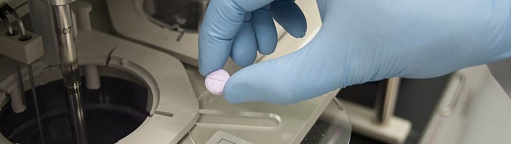

사진: The U.S. Food and Drug Administration · Public domain미국 Tox21 프로그램의 독성 실험 결과를 MoleculeNet 이 정리한 것: 분자 약 8천 개 × 독성 실험 12가지 (빈칸 있음). 분자는 SMILES 문자열
| ① 한 행 | 분자 하나 |
| ② 입력 X | SMILES 문자열 (또는 원자 · 결합 그래프) |
| ③ 출력 y | 독성 실험 12가지의 양성 / 음성 (빈칸 있음) |
| ④ 평가지표 | 실험별 ROC-AUC 평균 |
| ⑤ 기준선 | 모두 음성 |
누가, 왜, 어떻게 만든 데이터인지 직접 확인해 보세요.
인턴 · 산학협력 · 프로젝트 주제를 고를 때 참고하세요 (일반적인 예시).